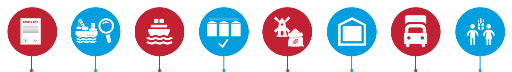
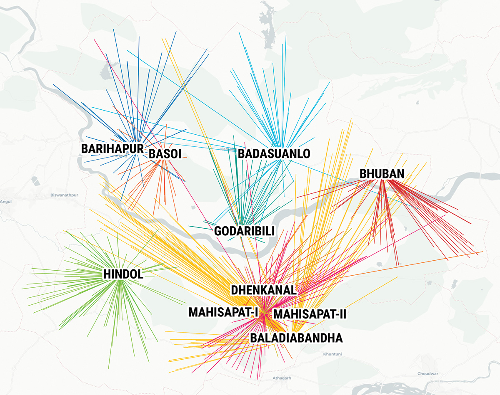
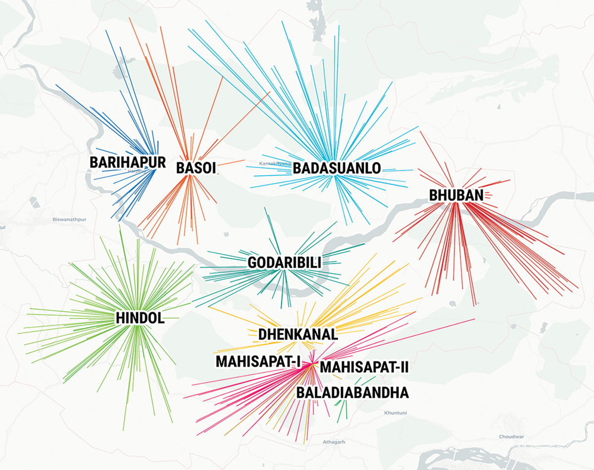
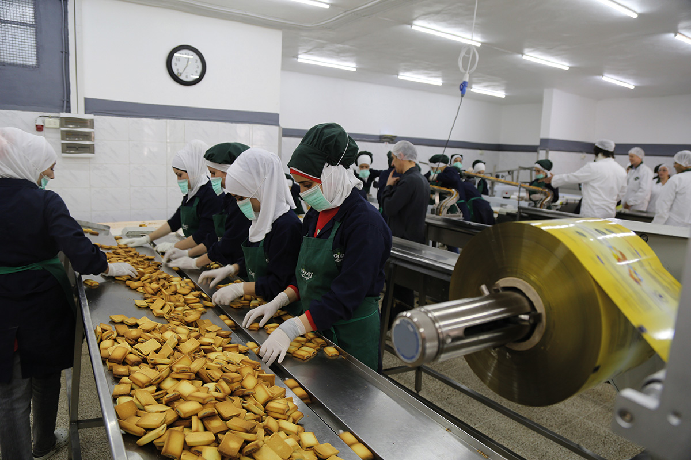
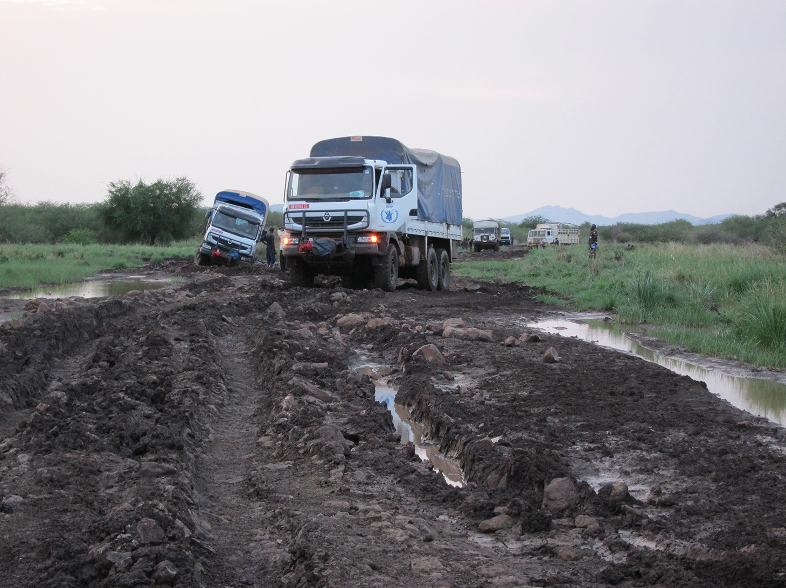
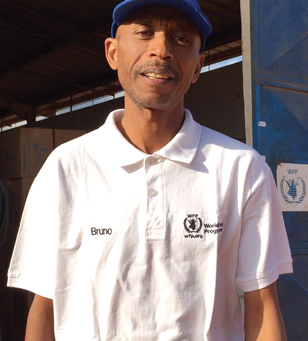

WFP Supply Chain
2018 in Review
Elements of WFP Supply Chain
FOOD PROCUREMENT
Purchasing the right food at the right time to benefit the people we serve
GOODS & SERVICES PROCUREMENT
Procuring the goods and services that keep the organization running
BUSINESS SUPPORT
Providing back-end support to keep operations running
LOGISTICS CLUSTER
Working together with other organizations to improve the logistics response in emergencies
UNHRD
Maintaining a global network of hubs that store and dispatch prepositioned relief supplies to emergencies
UNHAS
Flying humanitarians to the most remote and hard-to-reach locations
RISK AND INSURANCE
Developing and implementing risk management and insurance programmes for evolving organizational needs
SHIPPING
Using ocean transport to deliver high-volume humanitarian assistance worldwide
CASH-BASED TRANSFERS & MARKETS
Strengthening markets to empower beneficiaries to make their own food choices
FOOD SAFETY AND QUALITY ASSURANCE
Ensuring beneficiaries have access to safe and high-quality food
BILATERAL SERVICE PROVISION
Providing partners with key logistics services to support their programme interventions
PLANNING
Identifying the best operational solutions
SOLVE
Strengthening health supply chains globally
NORMATIVE GUIDANCE AND COMPLIANCE
Harmonizing business models and processes and ensuring a high degree of compliance
AVIATION
Providing vital assistance to the most remote and hard- to-reach locations by air
LOGISTICS
Managing an intricate storage and transport network to ensure effective and efficient delivery
The Journey of Wheat
FROM ROMANIA INTO THE HANDS OF YEMENI BENEFICIARIES IN TAIZZ
Each food basket used in WFP’s programmes is designed by the Nutrition Division taking into account nutritional needs and beneficiaries’ taste preferences. The Food Procurement Unit develops and maintains a shortlist of qualified suppliers, inspected by the Food Quality and Safety Unit to ensure compliance with WFP standards and specifications.
The Full Process
Contracting
International tender for wheat launched; supplier in Romania contracted.
LOADING
Wheat loaded onto a WFP- contracted ship following quality and quantity (Q&Q) inspection.
SHIPPING
Wheat en route to Aden through the Black Sea, Mediterranean and Red Sea for 10 days
UNLOADING
Wheat transferred from ship to silos following a Q&Q inspection.
PACKING
Wheat milled and transformed into flour and bagged into WFP marked bags.
STORING
Bagged wheat flour transported to WFP warehouses.
TRANSPORTING
Wheat flour delivered to cooperating partner warehouse, for transport to distribution sites.
DISTRIBUTING
Cooperating partner distributes food baskets to beneficiaries in Al Misrakh, Taizz Governorate.
Emergency Response
In 2018
WFP’s core mandate is to assist people affected by conflict and natural disasters to alleviate their suffering, protect their dignity and save their lives.
In 2018, WFP responded to eight L3 and ten L2 emergencies, humanitarian crises of large scale and the most severe impact, with L3 being the most severe crises requiring the mobilization of the entire humanitarian system. All of these crises were conflict-driven or complex emergencies.
To ensure the timely delivery of assistance in contexts where access is difficult and where dire humanitarian conditions require immediate action, the supply chain must be flawless because the lives and livelihoods of millions of people depend on it.
WFP is increasingly using cash-based transfers in emergency responses, empowering beneficiaries with the flexibility to make their own decisions when it comes to food.
On 29/05/2018 the Sahel L3 was downgraded to an L2 and referred to as “Mali L2” On 21/03/2018 Myanmar was referred to as an L2 and on 20/12/2018 the Bangladesh L3 was downgraded to an L2MT of food
US$ 1.08Bcash assistance
for L3 emergencies
of WFP’s overall
cash assistance in 2018
to Syria+5 crisis
MT of food
cash assistance
I studied mechanics for three years before getting my first job in a car repair shop. After a few years, my boss told me I could not get a raise because, as a woman, I could not be earning more than men. I resigned and found a job with WFP, where I have been working since 2007. Since then I do feel treated as an equal and it is really rewarding.
Chifundo CHANGADEYA,
WFP’S CHIEF MECHANIC in Malawi,
specializes in truck maintenance
End-to-End Supply Chain: From Planning to Delivery
Planning
Planning works to identify the best operational solutions
The size, scale and complexity of WFP operations require comprehensive planning.
The Planning Unit works to maximize and mainstream best practices developed across WFP Supply Chain and on developing state of the art solutions leveraging advanced analytics tools.
Planning provides support to:
management
bringing end-to-end visibility on WFP operations
Country Offices and Regional Bureaux
identifying optimization opportunities, making new tools available and training staff
L3 emergencies
identifying solutions for complex scenarios
In South Sudan, delivery modalities to deep-field locations were optimized, decreasing the need for airdrops and thereby reducing costs. Also, the delivery network and the corridor utilization for prepositioning were optimized.
Supply chain planning is a magic ball which ensures a cost-effective and efficient operation in the country. Whilst we have had to deliver more food assistance than before, we have been able to make substantial reductions in both the delivery costs and lead times, ensuring help gets to the maximum number of people in need.”
Adham Effendi
Head of Logistics, South Sudan
ADVISORY SERVICES
SUPPLY CHAIN OPTIMIZATION
In 2018, WFP was asked to optimize the supply chain of India’s Public Distribution System, a national safety net that reaches more than 800 million Indians with a monthly allowance of cereals.
A proof of concept was developed for Dhenkenal district, in Odisha state, where the Public Distribution System assists 928,000 beneficiaries.
WFP reviewed the various parts of the supply chain to identify inefficiencies and suggest alternative setups. One of the identified issues is that most of the cereal allocations are made based on administrative boundaries, which means that a warehouse in a specific suburb will be connected by default to all the mills and the delivery points in that suburb, even if other locations are physically closer. This results in higher transport costs and a less efficient supply chain.
This is what the network currently looks like, with several delivery points supplied by multiple warehouses that are not necessarily even the nearest ones 
And this is how the network will look with an optimized allocation that would reduce the average distance travelled between warehouse and delivery point by 21 percent 
SOLVE
In many developing countries, health supply chains are inadequate, resulting in the unavailability of health products to beneficiaries where and when needed. Through SOLVE, a project funded by the Bill & Melinda Gates Foundation, WFP uses its wealth of supply chain expertise to strengthen health supply chains across 17 pilot countries in Africa and Asia. Acting as strategic advisor on the ground to map out the gaps in the supply chain affecting the availability of health commodities, WFP recommends the best solutions to eliminate inefficiencies and market barriers.
FOOD PROCUREMENT
Food procurement ensures beneficiaries receive appropriate food, purchased fairly and transparently
Food procurement’s primary purpose is to procure the right food at the right time, in the right place and at the lowest possible price to supply WFP beneficiaries.
The Food Procurement Unit is responsible for buying commodities locally, regionally and internationally. Procurement experts in country offices, regional bureaux and headquarters develop and maintain shortlists of qualified suppliers to source commodities, including complex commodities, such as fortified cereals, which are increasingly used in WFP food baskets.
By procuring food fortified with essential micronutrients, WFP is not only fighting hunger but also the health implications of malnutrition. For example, WFP is actively contributing to rice fortification in 16 countries through a successful collaboration between the Nutrition and Supply Chain Divisions.
In collaboration with other WFP functions, including Vulnerability Analysis and Mapping (VAM) and Programme, as well as with external stakeholders, Food Procurement uses market intelligence to develop sourcing strategies which define the optimal time to buy the different commodities in various locations.
Procurement of food increased by 64 percent between 2014 and 2018, mainly driven by large scale emergencies such as Syria, Yemen and South Sudan.
Market prices are continually updated to avoid any adverse impact on local markets, while a stringent vendor vetting system is in place to ensure fairness, transparency and accountability.
MT procured in
2018 worldwide for
a total value of
increase compared
to
2017
of 2018 procurement
was in developing
countries
Food Safety and Quality
WFP integrates a comprehensive food safety and quality assurance system in its supply chain process, from programme design to delivery, to ensure beneficiaries have access to safe and high-quality food
The importance of the work carried out by the unit dedicated to food safety and quality has grown steadily with WFP’s food basket becoming more complex and relying more on processed food.
Food Safety and Quality
KEY ACHIEVEMENTS IN 2018
Evaluates vendors and provides assistance in managing inspection contracts
Built a platform for monitoring laboratory results capturing 21,000 data points and analysing trends of underperformance
Conducts research to improve WFP food baskets
Completed technical review of 20 food specifications of food basket items
Works on product and packaging specifications
Redesigned packaging of oil jerrycans to improve strength and reduce losses and adverse environmental impact
Enhances suppliers’ capacity to prevent food safety and quality issues
Coordinated 23 food safety and quality audits in nine countries
Collaborates with other actors on standard setting for food safety and quality
Led an interagency partnership comprising WFP, UNICEF, USAID, MSF and ICRC for streamlining food safety and quality processes such as supplier audits
Goods and Services Procurement
Goods and Services Procurement is essential to keep WFP operations around the world running and making the most effective and efficient use of WFP resources
The unit establishes agreements with suppliers of goods and services that can be used across operations.
Procurement specialists provide guidance, advisory and support services to country offices, and carry out oversight missions to ensure the most effective and efficient use of WFP’s resources.
US$9.5Msavings resulting from agreements for the purchase of Jet A1 fuel and Satellite Telecoms
yemen runs on WFP fuel
In 2018 WFP procured 36 million litres of diesel and petrol in support of the humanitarian response in Yemen.
This fuel has enabled WFP and its partners to run their operations and provide crucial assistance to the vulnerable.
The unit procures goods and services on behalf of the entire organization, not just Supply Chain. From new HR software to jet fuel for aviation.
US$70Mvalue of commodity voucher contracts in Yemen managed by the unit in 2018
goods and services
purchased in 2018
from
152countries
SURFACE TRANSPORT
Surface transport includes land transport and logistics activities that enable food to be safely delivered to final locations
To fill critical gaps in the commercial transport market, WFP relies on its own fleet of trucks, essential in operating environments that are remote, insecure, or lacking in infrastructure.
In 2018, Global Fleet owned and operated a fleet of 325 trucks.
The Global Fleet Unit is responsible for the management of these trucks, located in two hubs, in Accra and Kampala, for fast deployment to emergencies. The unit also ensures supervision of operations and provides technical support and training.
More than 200 trucks were deployed every month in 2018 from the hubs to deliver food in often very challenging conditions.
Once the food reaches the destination country, it is transported to the partners’ warehouses for distribution, via road, river, or rail, depending on the geography of the country and accessibility. Surface transport is, however, mainly road transport.
contracts with land transporters in 2018 for a value of
which translated into
trucks on the road daily
countries
In 2018, Supply Chain supported school feeding activities in 57 countries
Delivered commodities to the schools
Procured food locally for “home-grown school feeding,” which boosts the local economy
Ensured that children got safe food by providing food safety and quality guidance and technical support
School feeding is one example of how Supply Chain supports WFP’s programmatic activities.
I have on more than three occasions slept on the road when my truck got stuck in the mud or when the roads were impassable due to poor conditions. But I’m always inspired every time I arrive at a school to deliver food for school meals. I’m welcomed by children joyfully shouting ‘Porridge! Porridge! Porridge!”
STANLEY KONDOWE, A WFP TRUCK DRIVER IN MALAWI, DELIVERS SCHOOL MEALS AND LIFE-SAVING SUPPORT TO HARD-TO-REACH COMMUNITIES
shipping
USING OCEAN TRANSPORT, WFP IS ABLE TO DELIVER HIGH-VOLUME HUMANITARIAN ASSISTANCE WORLDWIDE
A dedicated shipping unit is responsible for cost-efficient ocean transport services providing timely and agile operational support to WFP operations, ensuring aid is delivered at the right time, in the right quantity and with the most appropriate mode of transport.
MT shipped by sea
Shipping is in charge of concluding long-term and spot contracts for cargo handling, for maintaining and reviewing WFP’s network of brokers, forwarding agents and other service providers. Furthermore, shipping officers conduct market intelligence and port assessments.
The Shipping Unit is also responsible for sea passenger operations to support complex operations such as the humanitarian response in Yemen, where 160 passenger and cargo voyages were completed in 2018 using two vessels.
75 percent of transported commodities were discharged in only 10 ports: Aden, Hudaydah and Saleef (Yemen); Mombasa (Kenya); Port Sudan (Sudan); Djibouti (Djibouti), Berbera (Somalia); Tartous (Syria); Salalah (Oman); and Douala (Cameroon).
TOTAL TONNAGE SHIPPED
Insight
In 2018
70%of all food for general distribution
entered Syria through the ports of Tartous and Lattakia
Alia
Al-Khoury
An expert in shipping and import operations, Alia Al-Khoury has worked for WFP for more than a decade. Leading a team of 15, she headed WFP port operations in Tartous and Lattakia, Syria, from 2016 through 2018.
"I don’t need to pick up a 50 kg bag of food to prove myself; knowledge and humility are more important than big muscles to do your job well and earn respect. My team – actually, more like a family – and I are passionate about our work because we can see how our work saves lives and delivers hope."
Alia Al-Khoury Logistics Officer Port Operation in Tartous and Lattakia
Aviation
The Aviation service enables WFP to deliver assistance to vulnerable people in locations that cannot be accessed by any other means
Aviation provides air transport capacity to deliver food and non-food items through airlifts, airfreight and airdrops.
Aviation is key in supporting WFP operations, as well as those of other humanitarian organizations and is particularly crucial in emergency response when aid must be delivered to the affected population fast.
In 2018, WFP delivered relief supplies on a large scale to support a number of emergency responses, including the Ebola outbreak in the Democratic Republic of the Congo, the earthquakes in Papua New Guinea, the cyclone that hit Socotra island in Yemen and the floods in Somalia.
In 2018, 14,912 MT of cargo was airlifted to 19 countries.
Airdrops are resorted to when inaccessible roads, insecurity and lack of proximity to a waterway make access impossible other than by air.
In 2018, 60,667 MT of food were airdropped to 81 drop zones in South Sudan.
storage
STORAGE IS A KEY stage IN A COMMODITY’S JOURNEY TO BENEFICIARIES
Good storage facilities and solid warehouse management are integral components of WFP supply chain and crucial to the ability to deliver food and non-food assistance.
WFP uses many different types of warehouse facilities. Some are permanent structures, others are temporary and deployed to serve immediate emerging needs following emergencies, or to be close to the final distribution points.
WFP staff are trained in setting up mobile storage units, as well as in managing stocks effectively to ensure the quality of all stored items and minimize losses.
The logistics centre in Amboasary in the south of Madagascar is a key hub with a capacity of 5,000 mt, serving one of the most fragile areas of the country.
warehouses
countries
managed by WFP
managed by third parties
BRUNO RAKOTOSAN,
WFP’S HUB MANAGER, AMBOASARY, MADAGASCAR
Cash-Based Transfers and Markets
The CASH-BASED TRANSFERS (CBT) and Markets UNIT works with the retail sector to map the end-to-end supply chain, removing inefficiencies and improving prices, quality, service and access for beneficiaries and the local population
Capitalizing on WFP’s 50+ years of experience in optimizing supply chains, CBT and market experts are deployed to countries where markets are functioning to:
MAP END-TO-END
SUPPLY CHAIN
IDENTIFY
INEFFICIENCIES
IMPROVE MARKET
EFFECTIVENESS
FOSTER RETAIL
INITIATIVES
Linking smallholder farmers to local markets
Training retailers on business skills
Aggregating small retailers into “buying clubs”
Using granular sales data to make informed programming decisions
The impact is
More choice and more nutritional
products to the market
Lower prices and better
customer service
Better access for beneficiaries and
local population
2018 Key Achievements
In Lebanon, WFP-contracted stores are five percent cheaper than other stores, translating to an additional US$6.5 million purchasing power for WFP beneficiaries and the local population.
In Jordan, 81 percent of contracted retailers are certified in Food Quality and Assurance by WFP and the Jordan Food and Drug Administration.
In Kenya, by linking local farmers and producers to retailers, the supply of fresh produce to Kakuma and Kalobeyei settlement markets increased by 200 percent and the price of tomatoes decreased by 30 percent.
In Bangladesh, WFP constructed two new outlets in Cox’s Bazar, providing food access to 135,000 additional beneficiaries.
Before there were no shops in the area and we couldn’t buy any of the goods available now. When we started we were not able to work very well, but through WFP’s trainings we are able to work better and we learnt how to negotiate with other people.
Jackline Nekesa Wafula,
host community contracted trader in Kalobeyei settlement
WFP’s expertise in humanitarian supply chain and its extensive field presence enables it to provide logistics services to other humanitarian actors.
WFP is making assets and services available to humanitarian organizations, supporting them in responding to emergencies more effectively and efficiently.
support to the humanitarian community
Bilateral Service Provision
Bilateral Service Provision supports partners in their programme interventions with crucial logistics services
Making use of its expertise in humanitarian logistics and its extensive field presence, WFP is able to provide logistics services and procure assets and relief items upon request to support emergency and development operations.
Central African Republic
900m3medicines and testing kits delivered to 838 delivery points for Global Funds projects
chad
6.7Mmosquito nets distributed across 13 regions for UNDP
yemen
60Ksachets of oral rehydration salts distributed with food baskets for WHO
United Nations Humanitarian Air Service
UNHAS PROVIDES SAFE, RELIABLE AND EFFICIENT AIR TRANSPORT SERVICE TO ENABLE AID WORKERS TO REACH PEOPLE IN NEED IN COUNTRIES AFFECTED BY CONFLICTS AND NATURAL DISASTERS
During sudden onset emergencies, air transport is often the fastest way to reach affected populations. UNHAS enables first responders to provide immediate life-saving assistance and ensures timely delivery of relief supplies to avert loss of life and or deterioration of the humanitarian situation.
UNHAS has 63 aircraft, with an additional 40 aircraft on standby, and its operations are comparable to some international commercial airlines.
UNHAS is managed by WFP on behalf of the humanitarian community. It is in charge of transporting passengers and light cargo for United Nations agencies, NGOs, donors, diplomatic missions and other organizations responding to humanitarian needs across the world.
UNHAS also performs medical evacuations and security relocation for aid workers. Following the two Ebola breakouts in the Democratic Republic of the Congo, UNHAS promptly deployed customized helicopters to transport health personnel and biological samples, and to serve as evacuation capacity for suspected patients.
2018 in numbers
passengers transported
16countries served
MT of cargo transported
700partners supported
Performed the highest number of security evacuations at one time by evacuating 245 humanitarian aid workers in only two days following an attack on humanitarian premises in Maban, South Sudan.
Logistics Cluster
The Logistics Cluster enables global, regional and local actors to meet humanitarian needs
The cluster works with stakeholders in high-risk countries and regions to strengthen local logistics capacities. In crises, where these capacities are exceeded, the cluster provides leadership, coordination, information and operational services.
Globally, the Logistics Cluster is a community of partners actively working together to develop and share best practices and solutions and to effectively and efficiently fill critical logistics gaps in emergencies.
WFP is the lead agency of the Logistics Cluster, appointed by the Inter-Agency Standing Committee (IASC) due to its expertise in the field of humanitarian logistics and its operational reach. As lead agency, WFP acts as provider of last resort when necessary, ensuring humanitarian actors have access to the common logistics services they need to complete their important work.
During 2018, the Logistics Cluster had active operations in 13 countries.
I’ve worked in logistics for over 14 years, and almost 9 years in the humanitarian sector. Despite all the ups and downs I realiZe there is no greater satisfaction thAn helping others in their time of need. This is also something I want to pass down to my daughter.
Samuel Terefe,
Logistics Cluster Coordinator, Syria
Samuel started his career with WFP in Ethiopia in 2009 and has been with the Logistics Cluster in Syria since 2016.
WFP Supply Chain is grateful to all donors for their contributions to WFP, without which the work of the division would not be possible. Donors who also contributed directly to the common logistics services, including the Logistics Cluster, UNHAS and UNHRD, are noted in bold.